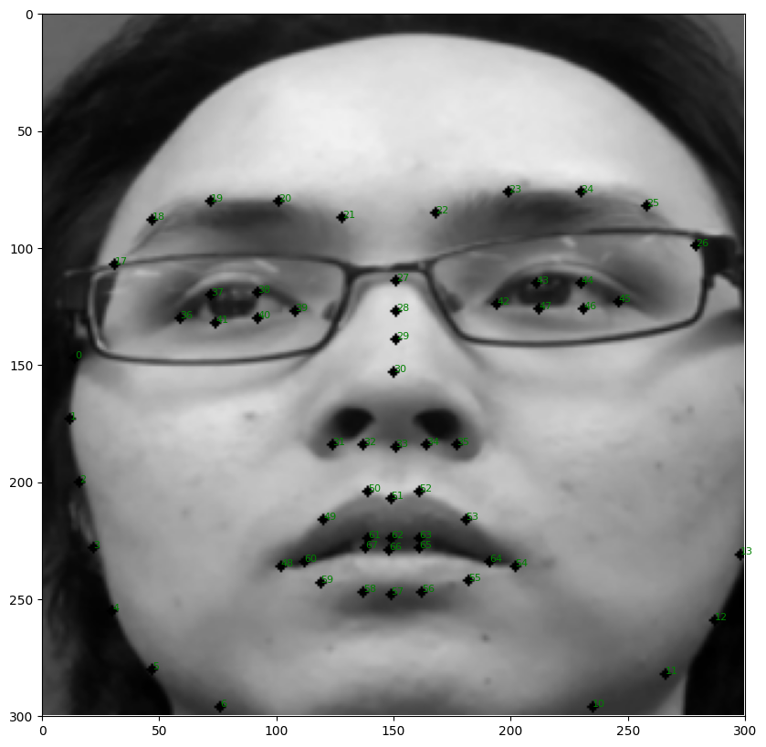
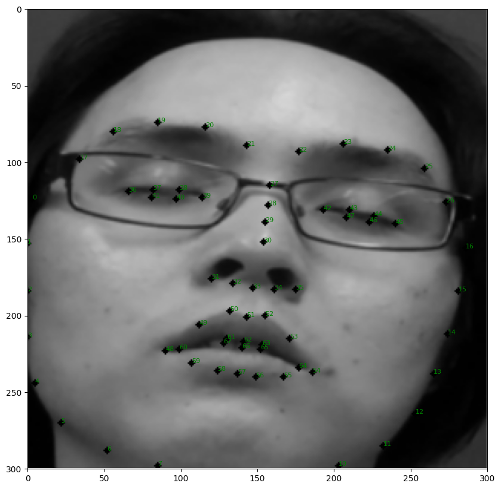
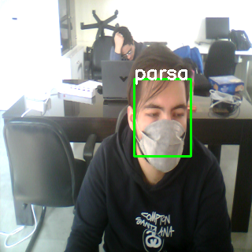
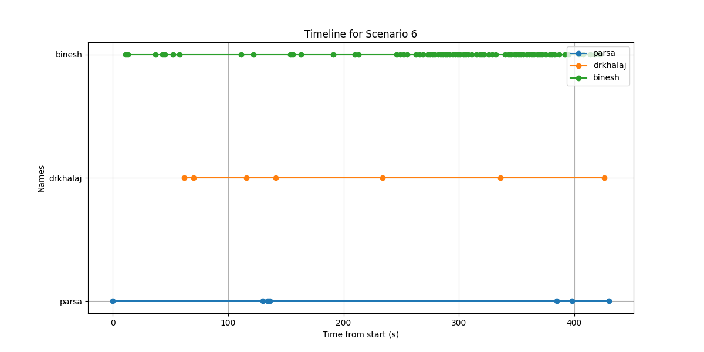
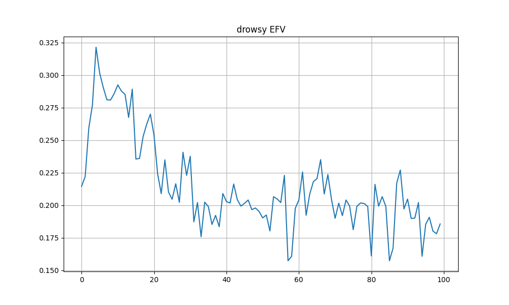

One edge node
From camera frame to useful vehicle event.
The two projects solve complementary parts of the same problem. The fatigue pipeline interprets facial behavior; the gateway identifies occupants and manages local records. Together they form a practical edge system that can act immediately without relying on a cloud connection.
Design principle: keep the time-critical perception and alert loop inside the vehicle, then treat the network as a synchronization channel—not as a runtime dependency.
InputIn-cabin cameraLive video stream
→
PerceptionYuNet face detectionFace crop and location
→
Identity pathSFace embeddingsCosine-similarity matching
Alertness path68 landmarks + SVMEyes, mouth, blinks and yawns
DecisionLocal event engineIdentity, fatigue and warnings
Vehicle signalsGPS · OBD · ECG integration paths
→SQLite event storeTimestamps, occupants and sensor records
→Connectivity managerDeferred server synchronization
Driver state
Facial behavior becomes a fatigue signal.
YuNet first localizes the face. A 68-point landmark model then isolates the eyes and mouth, producing eye and mouth feature vectors. SVM classifiers estimate their state frame by frame; temporal logic combines PERCLOSE, blink frequency, and yawn frequency into the final alert decision.
A yawn is modeled as a closed → small → big → small → closed mouth sequence lasting more than two seconds. This rejects short speech movements that resemble a single open-mouth frame.


89.5%Final documented accuracy on the labeled drowsiness evaluation dataset.
The evaluation used manually labeled samples from the DDD driver-drowsiness dataset and combined multiple facial indicators instead of relying on a single-frame eye decision.
Identity & resilience
An offline-first gateway built for a moving vehicle.
SFace converts each detected face into an embedding and compares it with locally registered occupants using cosine similarity. Recognized identities and timestamps are written to SQLite; unknown detections can be retained for later review.
The service controls its processing rate to protect edge-compute resources, retries the camera after interruptions, and records errors in structured logs. When the network becomes available, synchronization modules can upload camera, GPS, OBD, and ECG records to the server.
Detection, recognition, decisions, and storage remain available without internet access.
Camera retry and restart logic helps the service recover from a broken stream.
Frame skipping balances recognition latency with limited edge hardware.
A Linux service setup and JSON logging support unattended execution.



Documented validation
Seven real-world scenarios
The gateway was exercised with three enrolled identities across changing illumination, viewing angles, seating positions, and mask use.
- 0 false positives observed in the documented identity tests
- Front-seat occupants normally detected within 30 seconds
- Rear-seat occupants detected within one minute
Engineering outcome
Research translated into a deployable system.
The thesis established a multi-feature fatigue algorithm; the gateway work supplied the operational layer around it: identity, persistent storage, error recovery, vehicle-signal interfaces, and delayed synchronization. The merged architecture shows how a computer-vision model becomes a complete embedded product.
Perception
YuNet, Dlib landmarks, SFace embeddings, SVM classification, and temporal fatigue metrics.
Edge software
OpenCV streaming, SQLite persistence, frame-rate control, logs, and service management.
Automotive IoT
Local-first operation with GPS, OBD, ECG, and camera synchronization paths.